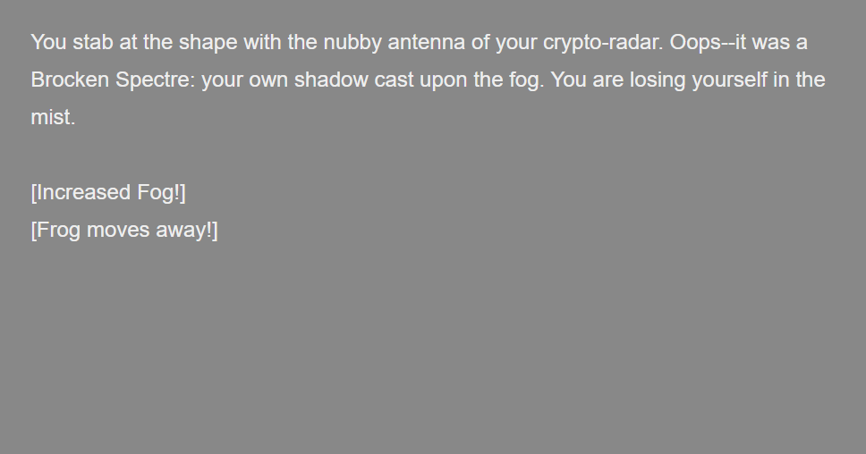
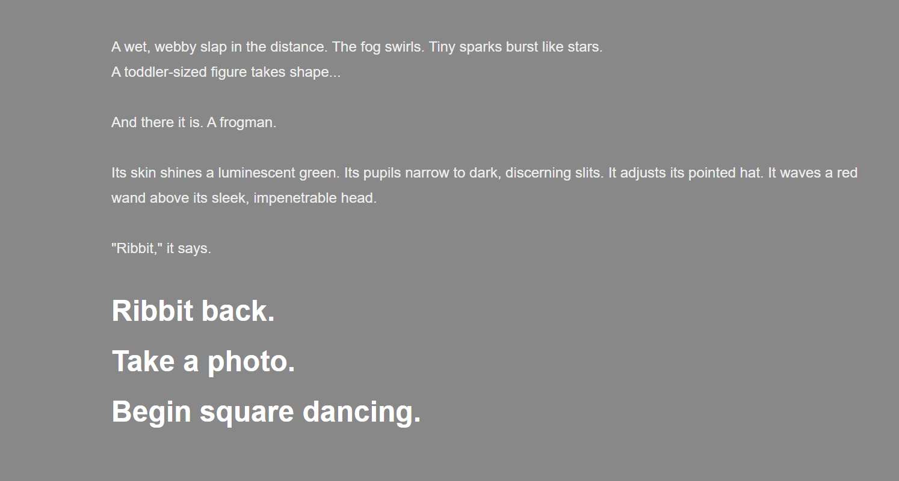
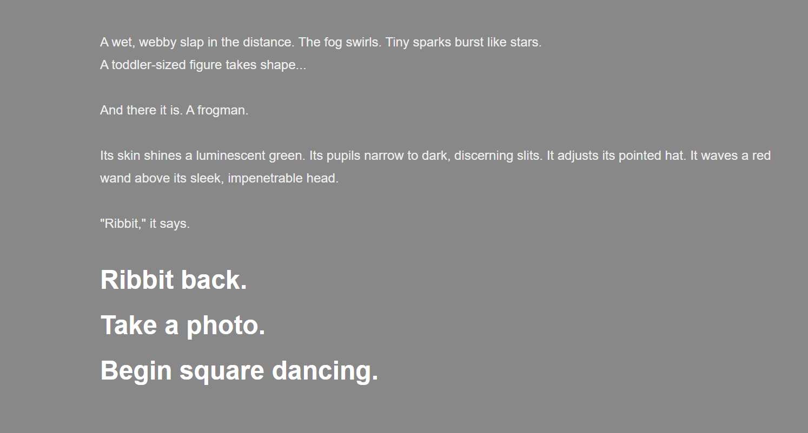
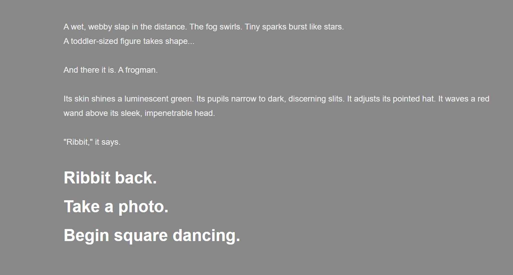

Frog in the Fog
Frog in the Fog is an adventure game created for my Creative Writing Immersion at the Rochester Institute of Technology.
The game features an open space to explore implemented using Javascript and the HTML canvas feature.
The assignment required the use of the Twine text adventure game engine, which lacked native support for the mechanics I wanted to implement.
Because of this requirement, I had to develop custom mechanics beyond what Twine is normally capable of producing.
Doing so led to technical lessons which would prove instrumental in developing A Town Called Trouble, the game's sequel.

 

